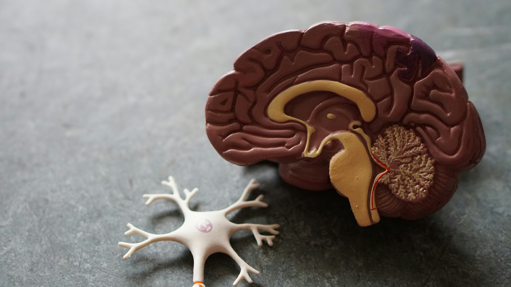

Introduction to Neuroscience
The human brain is the command center of the body, a complex organ made up of billions of neurons. Neuroscience studies how it works, from basic functions to advanced cognition. This field combines biology, psychology, and technology to unlock its mysteries.
Neuroplasticity
Neuroplasticity is the brain's ability to reorganize itself by forming new neural connections. This allows learning, memory, and recovery from injury. For example, practicing a skill like playing an instrument can strengthen related brain areas.
Mental Health
The brain plays a key role in mental health. Conditions like depression or anxiety can stem from imbalances in neurotransmitters. Understanding these links helps in developing therapies to improve well-being.
Key Brain Functions
The brain controls movement, senses, emotions, and thinking. The cerebrum handles higher functions, the cerebellum coordinates movement, and the brainstem manages basic life support like breathing.
Conclusion
Exploring the human brain reveals its incredible complexity and adaptability. Ongoing research continues to deepen our understanding, promising better health and technology innovations.